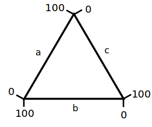

[]
坐标轴标定
点击选中标定点，然后使用光标键调整位置。使用 Shift+方向键 快速移动。调整完毕后，请点击”完成“。
手动提取
自动提取
蒙板
宽度
宽度
颜色
距离
算法
Template
点编组
Current Tuple:
Current Group:
覆盖
⇪
RGB:
, ,
主色:
编辑图像
测量距离
测量角度
测量面积/周长
按Enter或Esc键完成多边形
测量路径
测量闭环
检测网格
蒙板
颜色
背景模式
| 横轴 | |
| X% | |
| 纵轴 | |
| Y% |
WebPlotDigitizer 5.3
图像编辑
Click and drag to mark the crop region. Press Enter to complete cropping, Esc to cancel
XY Axes Calibration
Specify four points: X1, X2 on X-axis and Y1, Y2 on Y-axis
| X-Axis | |
| X1 | |
| X2 | |
| Y-Axis | |
| Y1 | |
| Y2 | |
Refer to the expected input format for calibration values, especially for dates and exponentials.
Bar Chart Calibration
Specify two points on the axes along the bars (P1, P2)
| Scale | |
| P1 | |
| P2 | |
Refer to the expected input format for calibration values, especially for dates and exponentials.
Map Calibration
Specify two points on the scale bar/reference dimension (P1, P2)
| Origin | |
| Scale | |
| Units |
Polar Diagram Calibration
Specify origin and two known points (P1, P2)
| Radial | |
| Scale | |
| R1 | |
| R2 | |
| Angular | |
| Unit | |
| Orientation | |
| Θ1 | |
| Θ2 | |
Ternary Diagram Calibration
Specify three points on corners of the ternary diagram (A, B, C)
| Scale | |

|
|
|
 |
Circular Chart Calibration
Specify 5 points: 3 at different values, but same time. 2 at different times, but same value as R2
| Time | |
| 图表开始时间（T_Start） | |
| Time (T_0) | |
| Rotation Time | |
| 旋转方向 | |
| Value Range | |
| R0 | |
| R2 | |
Refer to the expected input format for calibration values, especially for dates and exponentials.